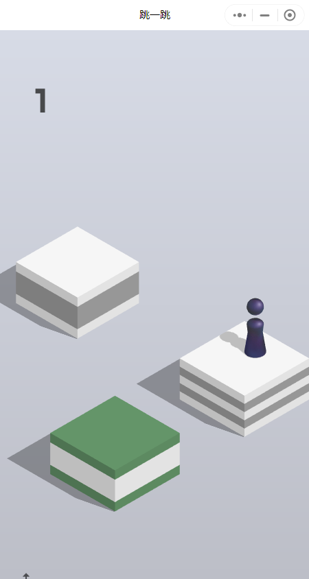

半自动手残拯救器：PC端微信跳一跳的解决方案
Table of Contents
1. 1 需求分析
近期，笔者被女朋友卷入了玩一个款名为“跳一跳”的小游戏中，由于笔者的判断能力较差，所以该游戏超不过二十分，大多数情况下仅能得到十分。为了显示出和女朋友之间的竞争性，便开始考虑能否写一个外挂。因为我记得很早之前好像出现过此类外挂。
于是我搜了一下历史上存在的外挂，发现这些外挂都失效了，因为：这些外挂是通过将手机连接电脑而使用的。如今2022年，微信也支持电脑上访问小程序了，因此笔者打算通过PC端直接做一款。
首先介绍一下跳一跳的游戏规则。该规则是，给你一个棋子，然后点住屏幕不动，就可以为棋子蓄力，搜开后就可以弹出来，而目标就是：让棋子一直不落在空地上。

所以一个经验就是：需要根据目标盒子与出发地的距离，确定摁住的时间长短。由于笔者太菜了……所以正常玩基本上不超过三四分，所以不得不考虑通过外挂来达到女朋友将近400分的分数了。
我的需求如下：
- 最大地降低掉分的风险；
- 可控，时时刻刻可以被用户停止，以防止分数虚高；
- 方案简单可实现。
基于以上需求，我构建设计了如下思路：
- 确定出发点和目的地的距离；
- 基于距离发射！
如果将上述两个步骤拆解，可以得到如下的详细步骤：
- 获得当前棋子的位置；
- 获得目标节点位置；
- 计算二者之间的距离；
- 根据距离产生需要hold住鼠标的时间；
- 根据决策结果，执行操作；
可以发现，这里面最困难的两步在于：如何获得特定目标的位置，以及如何计算时间。对于前者，CV上有目标检测任务，但我显然不能直接使用目标检测去做，因为我一没有数据，二没有算力，更重要的是，麻烦。所以我采用采用来比较简单的模板匹配算法，具体做法为：
- 对于棋子的位置，我实现截了一张图，然后通过全屏幕匹配这张图，找到棋子的两个座标（左上角和右下角），由于棋子的大小是固定的，我可以通过棋子的两个座标找到棋子的底盘椭圆的中心（我大概看了一下，是左上角往下79个像素，往右16个像素）了；
较为困难的是，获取要跳到的地方的中心，因为这个地方是变化的。白盒子，黑盒子，方的，圆的都有，这可如何是好！我不是特别懂CV，所以我干脆就放弃了对它做检测（如果我有数据，我可以试一试）。之前有人提出，说目标节点和源节点二者的座标关于中心节点对称，我也没有发现这个规律。
于是我干脆把找到目标节点的任务交给了人：需要人把鼠标放在它期望跳到的地方，然后手动确认，自己要跳到这里。
2. 2 具体实现
通过需求分析可知，做成这个事情，最大的需求有二：
- 操作鼠标，相当于一个接口；
- 操作图像，相当于进行处理；
2.1. 2.1 操作鼠标
操作鼠标的事情很简单，果然，一搜就找到了大把的API。基本上不管是什么语言都支持。我此处使用的是python，因为写起来快。
下面代码是通过这些API实现的基本操作。
from pymouse import *
# import time
import win32api
import pyautogui
def press(x, y, button=1):
buttonAction = 2 ** ((2 * button) - 1)
win32api.mouse_event(buttonAction, x, y)
def release(x, y, button=1):
buttonAction = 2 ** ((2 * button))
win32api.mouse_event(buttonAction, x, y)
def click(x, y, button=1):
press(x, y, button)
release(x, y, button)
def getPosition():
m=PyMouse()
print(m.position())
return m.position()
通过这几个操作，就可以把跳一步，这一任务实现了：
# (x,y) position mouse to hold
# t: seconds mouse to hold.
def autoguiHoldOn(x,y,t):
pyautogui.moveTo(x,y)
goOneStepWithTime(x,y,t)
def goOneStepWithTime(x,y,t):
press(x,y)
time.sleep(t)
release(x,y)
print(f"running one step done. Position: ({x},{y}); for {t} s.")
2.2. 2.2 简单的图像操作
本科接触过opencv，熟一点。不多说，直接上代码。唯一值得强调的是，此处有一个截屏的需求，我直接用的一个比较慢的library，因为我对时间没有需求……越慢反而越逼真。
# screen capture
def getScreenArray():
img = ImageGrab.grab(bbox=(0, 0, 2048, 2048))
img = np.array(img.getdata(), np.uint8).reshape(img.size[1], img.size[0], 3)
# cv2.imshow("222",img)
cv2.waitKey(0)
return img
# match templates
# where all_array denotes the array matched, and window_array is the template.
# It will return two tuples, including the position of top-left point and bottom-right point.
def getWindowPosition(all_array, window_array):
print("shape of window array：", window_array.shape)
h,w=window_array.shape
meth="cv2.TM_CCOEFF"
method=eval(meth)
results=cv2.matchTemplate(all_array,window_array,method)
min_val,max_val,min_loc,top_left=cv2.minMaxLoc(results)
bottom_right=(top_left[0] + w, top_left[1] + h)
return top_left, bottom_right
2.3. 2.3 组合
以上API就可以支持完成一整套操作了。如下所述：
def handwork(centerx,centery):
# get all screen
screen_array=getScreenArray()
screen_array = cv2.cvtColor(screen_array, cv2.COLOR_BGR2GRAY)
## get game position
screen=cv2.imread("./screen.png")
screen= cv2.cvtColor(screen, cv2.COLOR_BGR2GRAY)
screen_p_tl,screen_p_br=getWindowPosition(screen_array,screen)
print(f"Window top-left posotion: {screen_p_tl}")
print(f"Window bottom-right posotion: {screen_p_br}")
screen_p_tl=(735,142)
screen_p_br=(1185,941)
# centerx=int((screen_p_tl[0]+screen_p_br[0])/2)
# centery=int((screen_p_tl[1]+screen_p_br[1])/2)
# centerx+=200
# centery+=100
person=cv2.imread("./person.png")
person = cv2.cvtColor(person, cv2.COLOR_BGR2GRAY)
per_p_tl,per_p_br=getWindowPosition(screen_array,person)
print(f"person top-left posotion: {per_p_tl}")
print(f"person bottom-right posotion: {per_p_br}")
srcx=per_p_tl[0]+16
srcy=per_p_tl[1]+79
print(f"person position: ({srcx},{srcy})")
point=np.array([srcx-centerx,srcy-centery])
## calculate distance
distance=np.linalg.norm(point)
t=getTimefromDistance(distance)/1000
print(f"planning time: {t}")
# goOneStepWithTime(centerx,centery,t)
autoguiHoldOn(srcx,srcy,t)
然后主函数如下：
def main1():
i=0
while True:
print("please set your persition")
y=input("enter <RET> to set done. and q to exit.")
if y=="":
persition=getPosition()
handwork(persition[0],persition[1])
else:
return 0
if i>5000000:
break
# mymain()
i+=1
3. 结束语
我用这套东西刷到将近八百分，唯一值得注意的是，距离太长，关系就不是线性关系了，由于我的程序乘了一个系数，所以我会在距离太长时自己将目标点设置的近一点。和检测一样，如果我有数据，我也可以拟合这个函数关系（可惜我没有）。
我的源码在这里，如果你感兴趣，欢迎你也来玩，哈哈哈！